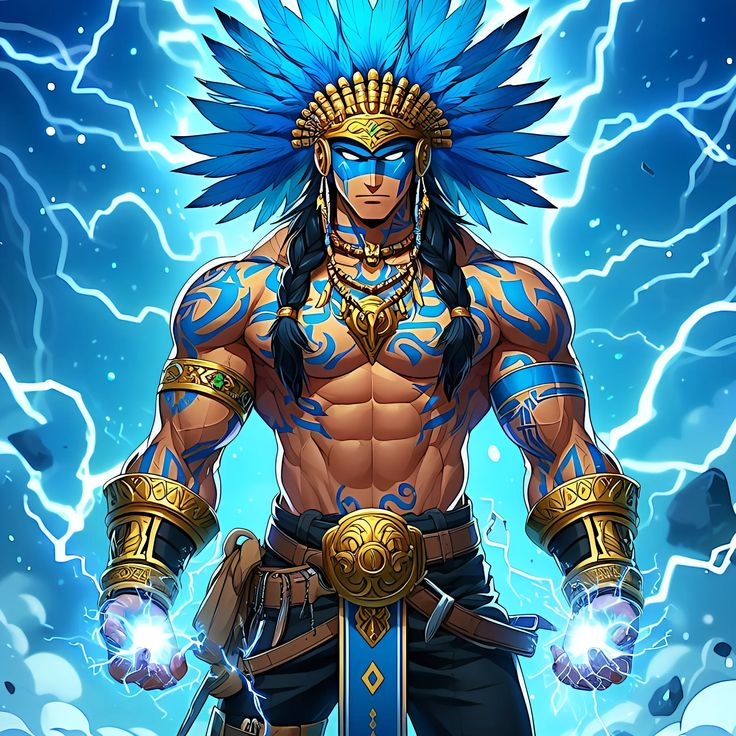
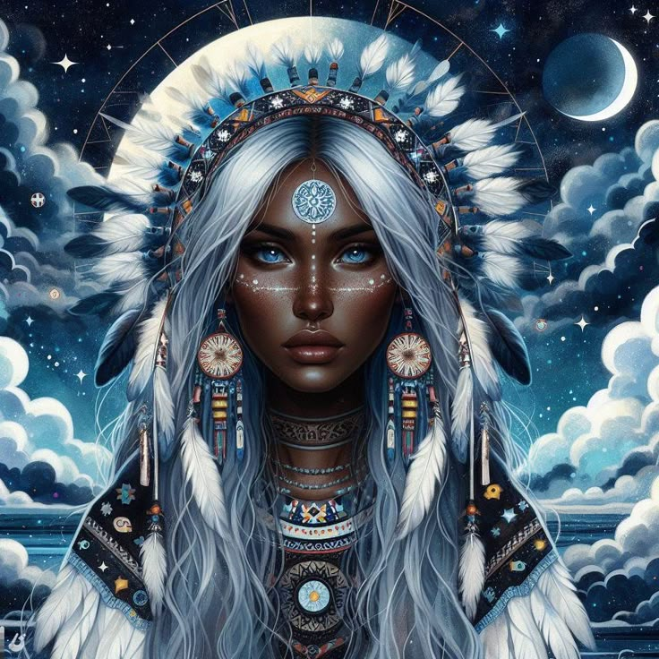
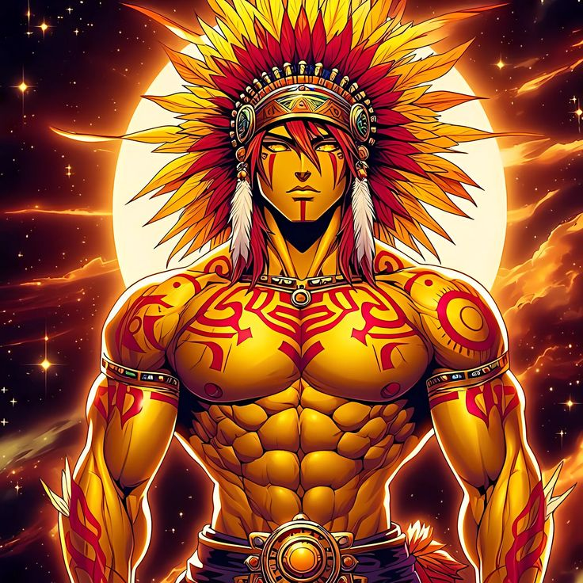
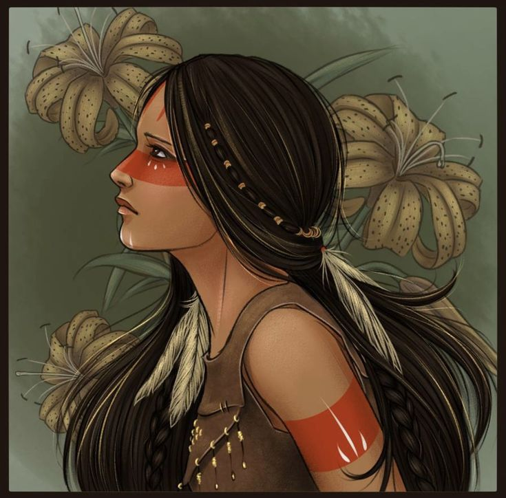
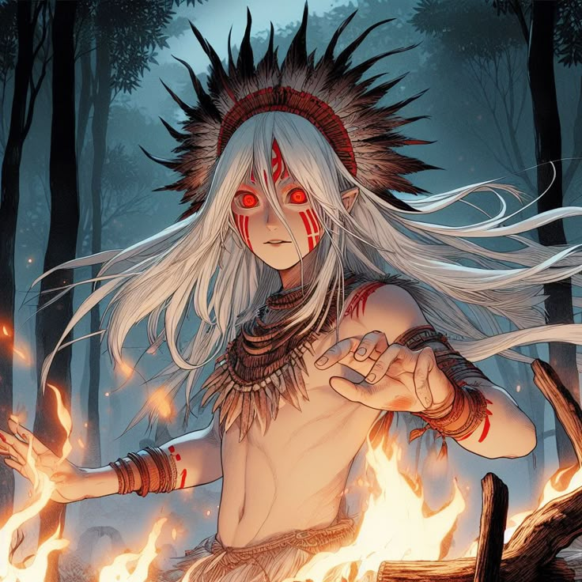
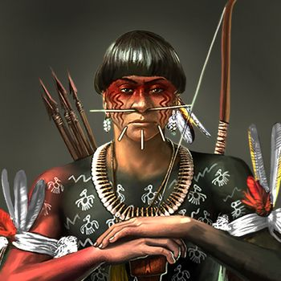

Sobre Nós
O Resgate Cultural refere-se à valorização e preservação de tradições, manifestações artísticas, saberes e práticas que compõem a identidade de um grupo ou comunidade. É um processo que envolve ações para manter viva a memória e os costumes de um povo, evitando que elementos importantes da sua cultura se percam com o tempo.
Resgate cultural e a tecnologia:
A tecnologia pode ser uma grande aliada no processo de resgate cultural, através de plataformas digitais, jogos educativos, aplicativos e outras ferramentas que facilitam o acesso e a divulgação do patrimônio cultural.
Em resumo, o resgate cultural é um processo fundamental para a preservação da identidade de um povo e para a construção de um futuro mais justo e diverso.
Mitologia Indígena
A mitologia indígena brasileira refere-se ao conjunto de crenças, narrativas, rituais e tradições culturais dos diversos povos indígenas que habitam o Brasil. Esse rico patrimônio espiritual e cultural é profundamente diversificado, refletindo a multiplicidade de etnias, línguas e modos de vida que compõem o cenário indígena brasileiro. A mitologia indígena brasileira abrange diversas histórias e figuras mitológicas que explicam a origem do mundo, a criação do ser humano, a relação entre os homens e a natureza, além de ensinar valores, normas de comportamento e aspectos da vida comunitária. Muitas dessas narrativas são transmitidas oralmente e podem variar de uma etnia para outra.
Temas comuns na mitologia indígena incluem:

Criação e Origem
Muitas comunidades têm suas próprias histórias sobre como o mundo e os seres humanos foram criados, envolvendo deuses, animais e espíritos da natureza.

Animais e Natureza
Os animais frequentemente desempenham papéis centrais nas narrativas, simbolizando características humanas e servindo como mediadores entre o mundo espiritual e o humano.

Rituais e Sabedoria Ancestral
Os mitos estão frequentemente interligados a rituais e práticas culturais que ajudam a fortalecer a identidade e coesão social de cada comunidade.
Ciclos da vida e da morte
A mitologia pode explorar temas como a vida após a morte, os ciclos naturais, e a interconexão entre todos os seres vivos.
Deuses e Espíritos
Muitos povos têm uma rica galeria de deuses, espíritos e entidades que regem diferentes aspectos da vida e da natureza.
Deuses Indígenas
A mitologia indígena brasileira é rica em deuses e seres sobrenaturais que desempenham papéis importantes na criação do mundo, na relação entre humanos e natureza, e na organização social das comunidades indígenas.
Tupã - Espírito do Trovão
Criador dos céus, da terra e dos mares, o grande “Espírito do Trovão”, como é conhecido por boa parte dos povos, foi quem deu origem à vida. Além de ensinar às criaturas humanas o fazer da agricultura, do artesanato e da caça, Tupã concedeu aos pajés todo o conhecimento sobre as plantas, ervas medicinais e rituais de cura.
Jaci - Deusa da lua
Filha de Tupã, Jaci é a deusa da lua e guardiã da noite. Responsável pela reprodução, ela tem o dom de despertar as saudades no coração dos caçadores e guerreiros para que voltem sempre ao colo de suas esposas e cuidem de suas famílias.
Guaraci - Deus do Sol
Irmão e marido de Jaci, Guaraci é o deus do Sol, guardião do dia que auxiliou o pai Tupã a criar todos os seres vivos. Existe um ritual no qual as mulheres rezam para os seus companheiros que saem para caçar na passagem do dia para a noite, que seria o momento em que Jaci e Guaraci se encontram para abençoar essa união.
Ceuci - Deusa das moradias e das lavouras
Ceuci é quem protege e acolhe os frutos da nossa terra. É muito comparada à Virgem Maria, da religião católica.
Anhangá - Protetor dos animais e dos caçadores
Anhangá, na mitologia indígena brasileira, é um espírito protetor da floresta, dos animais e do meio ambiente. Ele é frequentemente associado à figura de um cervo branco com olhos vermelhos, mas também pode se manifestar como outros animais ou mesmo um homem. Anhangá pune aqueles que maltratam a natureza ou cometem excessos na caça, sendo considerado um guardião do equilíbrio natural.
Sumé - Deus das leis e das regras
Sumé foi quem ensinou aos índios os saberes sobre como cozinhar a mandioca e utilizá-la no cotidiano como um importante fruto que a terra deu.
Fale conosco
Redes Sociais
Endereço
Rua teste exemplo nº146 Bairro: BootStrap São Paulo-SP